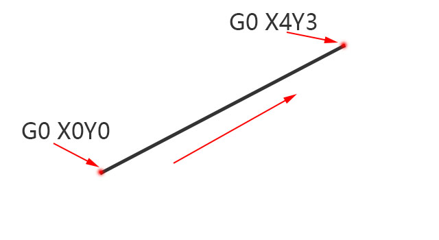
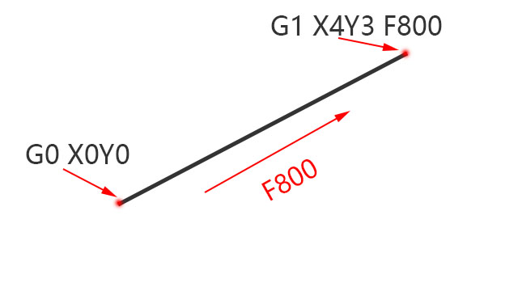
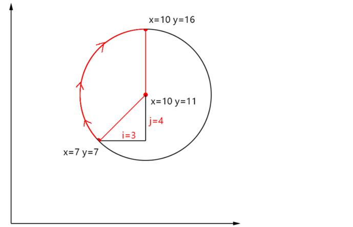

数控系统只能听懂G语言，使用这个语言才能指挥机器的运动。
这里只介绍4个使用最频繁的指令，了解它就能看懂机器是如何运动了的。
其它的指令，用到的时候在进行查找即可，详细资料参考百度网盘：
-
百度云地址 ：https://pan.baidu.com/s/1nF3oDF2iqsqecA1bz-zKzQ
网络爬虫经常导致分享文件失效，只能把提取吗放到QQ群里，网友见谅
提取码：QQ群538472514，公告中
-
G0快速定位：使用机器支持的最快速度，从线段的一点运行到另一点
-
例如：如下代码，表示从（x=0,y=0）点运动到(x=4,y=3)点
G0 X0Y0
G0 X4Y3
G1直线切削：设置切割速度，以指定的速度进行直线切割
-
例如：如下代码，表示从（x=0,y=0）点，以800的切割速度移动到(x=4,y=3)点
G0 X0Y0
G1 X4Y3 F800
G2圆弧切削：切割一个圆弧
-
例如：如下代码，表示从（x=7,y=7）点，沿圆弧移动到(x=10,y=16)点
G0 X7Y7
G2 X10Y16 i3 j4
-
G0 X7Y7：表示当前位置是x=7,y=7
G2 X10Y16 i3 j4：表示顺时针旋转到x=10、y=16。i3 j4表示圆心点在当前位置+(3,4)，即在x=10，y=11处
-
G12圆形切削：切割一个完整的圆
-
例如：如下代码，表示以（x=5,y=5）点为圆心，半径=3，绘制一个圆
G0 X5Y5
G12 i3：向x轴移动3个单位，然后绕圆心旋转一圈，在回到圆心
-
把这4个指令记住，基本就能看懂G代码。没有碰到的指令，选择性忽略，也不影响对雕刻刀路的理解。
如果想了解每一条指令，参考百度网盘的资料
G代码范例：绘制正方形
下面我们就使用上面几条指令，来绘制一个正方形。后面的电控教程，会使用这个G代码
G0 X0Y0Z2
G1 X0Y0Z0 F800
G1 X50Y0
G1 X50Y50
G1 X0Y50
G1 X0Y0
G0 X-10Y10Z15
G0 X-10Y10Z10
-
-